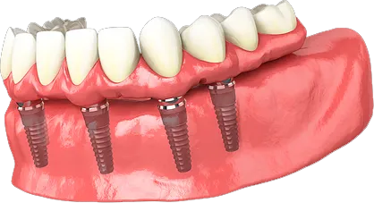

O tratamento que devolve dentes fixos, liberdade para comer e segurança para sorrir, sem a instabilidade, a cola e a vergonha da dentadura.
Conheça o Protocolo de Reabilitação Oral da Odontologia Ribeiro, pensado para pessoas que não querem mais improvisar com próteses soltas e buscam uma solução definitiva, segura e naturalmente estável para voltar a viver com confiança.
Conheça o Protocolo
O que você realmente recupera quando deixa de usar uma solução provisória e passa a ter dentes fixos
Você recupera liberdade para comer
Chega de escolher o que vai mastigar com medo da prótese soltar, machucar ou não aguentar. O objetivo é devolver segurança para voltar a comer com mais firmeza e tranquilidade.
Você recupera segurança para sorrir
Seu sorriso deixa de ser um lugar de insegurança, tensão ou vergonha. Você fala, ri e aparece em fotos sem precisar esconder a boca com a mão.
Você deixa de depender de cola e adaptação
Não é mais uma rotina de improviso, desconforto e medo. É uma estrutura fixa, estável e pensada para funcionar com previsibilidade.
Você troca limitação por estabilidade
Mais do que estética, o que essa solução devolve é funcionalidade. É a possibilidade de mastigar melhor, viver melhor e sentir mais firmeza no dia a dia.
Você sai da lógica do remendo
Aqui, você não compra peças soltas nem "o implante mais barato". Você entra em um planejamento completo, com direção clínica e solução pensada para o seu caso.
Você recupera dignidade
Porque, no fim, não estamos falando só de dentes. Estamos falando de autonomia, presença e liberdade para viver sem medo.
Como você tende a se sentir e a viver, depois de sair da dentadura e entrar numa solução fixa
Esse tratamento não foi pensado para "melhorar um pouco". Foi pensado para encerrar um ciclo de limitação que muita gente suporta em silêncio.
Na prática, isso tende a aparecer assim:
- ✦Você volta a mastigar com confiança
Sem medo de deslocar a prótese, sem evitar alimentos, sem tensão na hora de comer. - ✦Você sorri sem se proteger
Sem esconder a boca, sem constrangimento, sem aquele receio constante de alguém perceber instabilidade. - ✦Sua imagem volta a transmitir segurança
O sorriso deixa de parecer provisório. Passa a parecer seu, firme, natural e funcional. - ✦Sua rotina fica mais leve
Menos adaptação, menos improviso, menos preocupação diária com algo que deveria estar resolvido. - ✦Você volta a se sentir livre
Livre para comer, falar, sorrir e estar com outras pessoas sem carregar aquele desconforto silencioso.
O melhor resultado não é só estético. É sentir que você recuperou uma parte da sua vida que parecia perdida.Quero me ver assim
O Protocolo não vende implantes avulsos. Ele entrega uma reabilitação oral definitiva.
O paciente não compra "parafusos". Compra um plano completo para voltar a ter uma arcada fixa, estável e funcional.
-
01
Planejamento digital
Tudo começa pela leitura correta do seu caso. A análise considera:
- —estrutura óssea
- —condição da arcada
- —necessidade funcional
- —segurança cirúrgica
- —previsibilidade do resultado
Porque o objetivo não é apenas "colocar dentes". É devolver estabilidade, força e segurança com critério.
-
02
Estrutura inteligente
O Protocolo inverte a lógica que assusta tanta gente. Você não precisa de um implante para cada dente perdido. Com uma quantidade estratégica de fixações, é possível devolver a arcada completa com muito mais eficiência do que a maioria imagina.
-
03
Reabilitação fixa
O foco aqui é tirar o paciente da lógica da dentadura móvel e colocá-lo numa condição de maior firmeza, estabilidade e liberdade funcional.
-
04
Estética natural e função real
Não adianta "parecer melhor" se continua difícil mastigar. A proposta é unir segurança funcional com resultado visual harmonioso.
A clínica popular vende o implante mais barato. O Protocolo vende previsibilidade, estabilidade e liberdade.
A maioria das ofertas do mercado apela para:
- ✕preço baixo
- ✕urgência comercial
- ✕implantes avulsos
- ✕promessa simplista
- ✕foco no barato
O problema é que esse caminho costuma ignorar o que mais importa:
- ✓planejamento
- ✓previsibilidade
- ✓função
- ✓estabilidade
- ✓confiança para viver com o resultado
O Protocolo existe para romper com isso. Aqui, a solução não nasce do improviso. Nasce de direção clínica.
Não é sobre "quantos implantes". É sobre devolver uma arcada fixa com segurança, conforto e lógica de reabilitação definitiva.
Por isso, o Protocolo não vende peça. Vende recuperação da dignidade e da liberdade.
Quero entender esse diferencialO Protocolo faz sentido para você que…
- ✓usa dentadura e está cansado da insegurança
- ✓sente dor, instabilidade ou desconforto na gengiva
- ✓evita certos alimentos porque não confia na prótese
- ✓esconde o sorriso em fotos ou na convivência social
- ✓usa cola e ainda assim não se sente seguro
- ✓quer uma solução definitiva, e não mais adaptação
E também para você que…
- ✦está perdendo dentes e tem medo de chegar ao ponto da dentadura
- ✦quer resolver isso com mais rapidez e previsibilidade
- ✦rejeita improviso e quer um plano sério
- ✦procura uma clínica em que possa confiar no planejamento, não só na oferta
Quando a decisão é definitiva, a confiança precisa vir antes do tratamento
Na Odontologia Ribeiro, a reabilitação oral total não é tratada como venda de procedimento. É tratada como um projeto clínico de alta responsabilidade.
- → Planejamento antes da execução
- → Previsibilidade antes da promessa
- → Estrutura antes da estética isolada
- → Segurança técnica antes de preço
O foco está em devolver função, estabilidade e naturalidade dentro de um ambiente high standards, para que o paciente deixe de viver no improviso e entre numa solução realmente definitiva.
Quero conhecer o protocoloO que é a Prótese Protocolo?
É uma solução fixa para reabilitação oral completa, indicada para pacientes que perderam muitos dentes ou usam dentadura e querem uma alternativa mais estável, segura e definitiva.
Precisa de um implante para cada dente?
Não. Essa é justamente uma das vantagens do Protocolo. A reabilitação é feita com uma quantidade estratégica de fixações, e não com um implante por dente.
O objetivo é só estético?
Não. O objetivo principal é devolver função, estabilidade e segurança para mastigar, falar e sorrir com mais liberdade.
Quem usa dentadura pode fazer esse tratamento?
Em muitos casos, sim. O primeiro passo é avaliar a estrutura e entender a viabilidade do caso.
É uma solução mais segura do que continuar com prótese móvel?
Para muitos pacientes, sim, porque reduz a instabilidade e devolve uma experiência muito mais firme no dia a dia.
Esse tratamento é muito invasivo?
A percepção de muita gente é pior do que a realidade. O Protocolo foi justamente criado para oferecer uma solução inteligente, com menos improviso e mais previsibilidade.
Quanto tempo leva para entender se meu caso se encaixa?
O primeiro passo é uma avaliação para entender sua condição atual e qual o melhor plano para o seu caso.
Vale a pena mesmo sendo um tratamento de ticket mais alto?
Quando o paciente entende que está trocando insegurança diária por uma solução definitiva, a comparação deixa de ser com "preço" e passa a ser com qualidade de vida.